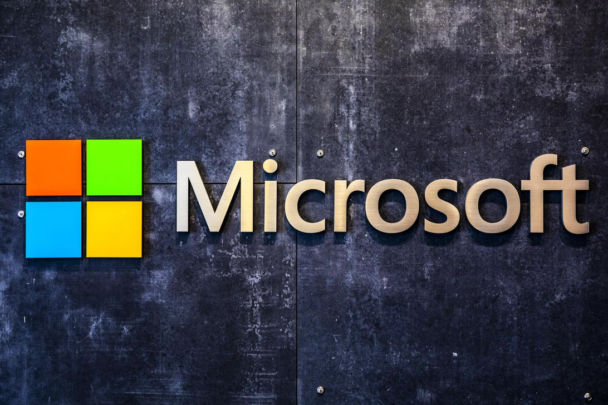

El mundo avanza aceleradamente. Llegará un punto en que la mayoría de trabajos podrán ser reemplazados por un ordenador. ¿Sabes cuál sería la misión del hombre en un mundo así? Seguir investigando, y programando cada vez artefactos más inteligentes.
Programar implica desarrollar algoritmos para resolver problemas de todo tipo. La inteligencia es la capacidad para resolver problemas. Por tanto, programar es una actividad que nos hace sentir vivos, y demuestra que somos seres inteligentes.

La llegada de Kevin Mayer a TikTok fue vista como una forma de impulsar TikTok como servicio de entretenimiento y vídeo, dada su experiencia impulsando Disney+, pero también como una forma de mostrar al Gobierno de Estados Unidos que la compañía tenía una base de operaciones estadounidense con poder e independiente fuera de China. Había sido así desde los comienzos de Musical.ly, compañía que luego dio lugar al TikTok actual tras ser comprada por ByteDance. Los fundadores eran chinos, pero muy pronto se centraron en crecer en el país norteamericano.